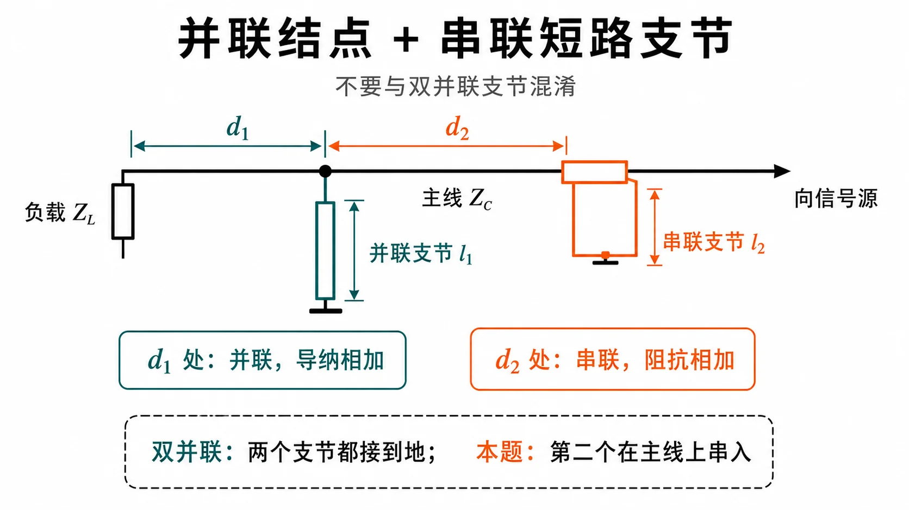
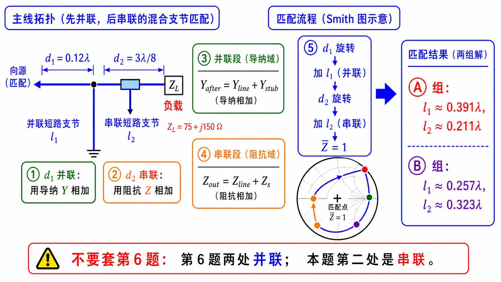

第二次作业 · Lec08–09 · 第 7 题§
对应知识点：03-并联支节匹配
导航： 总目录 · 符号与导读 · Lec08–09 总册 · Lec06 · Lec07 · 附录
说明：并联枝节列式与 第 1 题 同族；不可套用 第 6 题「两并联双支节」公式——本题 $d_2$ 处为 串联 枝节。
第 7 题§
（对应大纲 Lec08–09 作业 第 7 题；该讲教材章节 §1.6。）
题目复述§
$Z_L=(75+\mathrm{j}150)\,\Omega$，$Z_c=75\,\Omega$；在 $d_1=0.12\lambda$ 处并联短路支节 $l_1$；再沿主线到 $d_2=3\lambda/8$ 处，把短路支节 $l_2$ 与主线串联。求 $l_1$、$l_2$。

图：$d_1$ 处为并联短路线；$d_2$ 处支节与主线串联（与第 6 题「两并联支节」不同）。

图（辅读）：列式时 $d_1$ 并联用 $Y$ 相加，$d_2$ 串联用 $Z$ 相加。
详细思路§
工程/物理目标：按上图 混合拓扑（$d_1$ 并联、$d_2$ 串联）列方程求 $l_1,l_2$，使端口满足匹配；核心纪律是 并联只动 $Y$、串联只动 $Z$，不可套用第 6 题「两并联」公式。
- 并联支节：结点导纳相加。
- 串联支节：在主线串联一阻抗 $Z_s=\mathrm{j}Z_c\tan\beta l_2$（短路线模型），总阻抗为线段输入阻抗与 $Z_s$ 的串联（与并联完全不同，须按图中电路顺序写）。
思路叙述：
（$d_1$ 处并联短路线与 第 1 题 同一套；$d_2$ 处串联必须用阻抗相加，勿抄并联导纳式。）明确顺序：自负载起先到 $d_1$，并联 $l_1$；再沿主线到 $d_2$，串入 $\mathrm{j}75\tan\beta l_2$；剩余线使端口匹配（或题设要求端口为纯阻等）。列两个方程（实部、虚部）解 $(l_1,l_2)$，或 Smith 圆图分步。
解法一：公式（列式与数值）§
一步步解答§
通用列式（与上图拓扑绑定）
- 算 $d_1$ 并联前 向负载看的 $Z(d_1^-)$（或 $\bar Z$），再 并联短路枝节 得 $Y_{\mathrm{after1}}$（导纳相加）。
- 沿主线变换到 $d_2$ 串联前 截面得 $Z(d_2^-)$。
- 串联 短路枝节 $Z_s=\mathrm{j}Z_c\tan\beta l_2$，得 $Z'=Z(d_2^-)+Z_s$。
- 端口要求匹配到 $Z_c$，在 归一化 下写 $\mathrm{Re}\,\bar Z'=1$、$\mathrm{Im}\,\bar Z'=0$（与 $\mathrm{Re}\,Z'=Z_c$、$\mathrm{Im}\,Z'=0$ 等价）。
数值推演（拓扑约定：负载 $\to$ 经 $d_1$ 到第一并联枝节 $\to$ 沿主线经 $d_2=3\lambda/8$ 到第二串联枝节 $\to$ 向源；端口要求匹配到 $Z_c$，即第二枝节后 $\bar Z=1$。）
（1）$d_1$ 并联前（归一化） $\bar Z_L=1+\mathrm{j}2$，$\tan\beta d_1=\tan(0.24\pi)\approx 0.93906$：
$$ \bar Z(d_1^-)=\frac{\bar Z_L+\mathrm{j}\tan\beta d_1}{1+\mathrm{j}\bar Z_L\tan\beta d_1}\approx 1.1385-\mathrm{j}2.1295, $$
$$ \bar Y(d_1^-)=\frac{1}{\bar Z(d_1^-)}\approx 0.19525+\mathrm{j}0.36521. $$
（2）第一并联短路枝节 归一化导纳 $-\mathrm{j}\cot\beta l_1$，结点相加：
$$ \bar Y_B=0.19525+\mathrm{j}\bigl(0.36521-\cot\beta l_1\bigr),\qquad \bar Z_B=\frac{1}{\bar Y_B}=a+\mathrm{j}b. $$
（3）经 $d_2=3\lambda/8$ 时 $\beta d_2=3\pi/4$，$t_2=\tan\beta d_2=-1$：
$$ \bar Z_C=\frac{\bar Z_B+\mathrm{j}t_2}{1+\mathrm{j}\bar Z_B t_2} =\frac{\bar Z_B-\mathrm{j}}{1-\mathrm{j}\bar Z_B}. $$
（4）串联第二短路枝节 归一化阻抗 $\mathrm{j}\tan\beta l_2$，匹配要求
$$ \bar Z_{\mathrm{out}}=\bar Z_C+\mathrm{j}\tan\beta l_2=1. $$
先令 $\mathrm{Re}\,\bar Z_C=1$（否则仅靠串联纯电抗无法把实部调到 $1$）。把 $\bar Z_B=a+\mathrm{j}b$ 代入 $\bar Z_C=(\bar Z_B-\mathrm{j})/(1-\mathrm{j}\bar Z_B)$，可化得（直接展开即得）
$$ \mathrm{Re}\,\bar Z_C=\frac{2a}{a^2+(b+1)^2}. $$
令其为 $1$：
$$ 2a=a^2+(b+1)^2. $$
其中 $a,b$ 由 $\bar Y_B$（因而由 $\cot\beta l_1$）决定；上式是关于 $\cot\beta l_1$ 的一个实方程，一般可用数值求根（或化为二次式后代入本题具体数）。
（5）定 $l_2$ 在 $\mathrm{Re}\,\bar Z_C=1$ 成立后，令 $\mathrm{Im}\,\bar Z_{\mathrm{out}}=0$：
$$ \tan\beta l_2=-\,\mathrm{Im}\,\bar Z_C. $$
（6）本题数值（与上拓扑一致时） 常见两组解为：
- 分支 A： $l_1\approx 0.391\lambda$，$l_2\approx 0.211\lambda$。
- 分支 B： $l_1\approx 0.257\lambda$，$l_2\approx 0.323\lambda$。
（末位因求根步长/舍入略有出入属正常。）
标准解答§
- 列式： $d_1$ 并联 用 $Y$ 相加；到 $d_2$ 串联 用 $Z$ 相加；不可把第 6 题「两并联」公式搬来用。
-
数值： $(l_1,l_2)$ 可取 约 $(0.391\lambda,\,0.211\lambda)$ 或 约 $(0.257\lambda,\,0.323\lambda)$ 两组。
-
检验/注意： 并联与串联支节不能混用同一公式；先画拓扑再列方程。
解法二：圆图（Smith）§

图：左侧先画清拓扑：$d_1$ 处并联短路支节用导纳相加，$d_2$ 处串联短路支节用阻抗相加；右侧列出按这一路径求得的两组长度。
读图说明（零基础）
- 分段纪律：$d_1$ 并联 → 在 导纳面 用 $Y_{\mathrm{tot}}=Y_{\mathrm{line}}+Y_{\mathrm{stub}}$（外圆调 $l_1$）；$d_2$ 串联 → 在 阻抗面 $\bar Z'=\bar Z_{\mathrm{line}}+\bar Z_s$，不可写成导纳相加。
- 本图作用：先防止拓扑混淆：并联段 与 Q4/Q5 同族，必须用导纳；串联段 在 Smith 上 不是 简单沿等 $|\Gamma|$ 圆走一段外圆，必须回到阻抗域做相加。
- 为何 Smith 不「一眼读完」：串联电抗在 $\Gamma$ 平面上 非 沿外圆的纯电纳轨迹；本题以 解法一 列式为主，圆图作 校验并联 + 线长旋转。
- 自检：$d_1$ 并联后导纳实部仍须满足物理可实现；$l_2$ 只进入 $\mathrm{j}\tan\beta l_2$ 的 阻抗 支路。
圆图操作步骤
- $\bar Z_L=1+\mathrm{j}2$（$Z_L/Z_c$）；在 阻抗圆图 上标负载，向源 走 $d_1=0.12\lambda$ 到 $d_1^-$ 截面读 $\bar Z$（或用公式算再图上核对）。
- $d_1$ 并联短路枝节：在 导纳圆图 上，从 $\bar Y(d_1^-)$ 出发，枝节提供 纯电纳，沿 $g=\text{常数}$ 的竖直方向在导纳面上移动（等价于并联短路点沿外圆取长度 $l_1$），使结点 $\bar Y$ 变化；读图或列式与 $Y_{\mathrm{tot}}=Y_{\mathrm{line}}+Y_{\mathrm{stub}}$ 一致。
- 再沿主线 向源 变换到 $d_2^-$（阻抗或导纳圆上转相应电长度）。
- $d_2$ 串联短路线：在 阻抗域 $\bar Z'=\bar Z(d_2^-)+\bar Z_s$，$\bar Z_s=\mathrm{j}\tan\beta l_2$（归一化）；Smith 上为沿 实轴平移 的直观较弱，通常 在阻抗平面作矢量相加 或直接用公式解 $(l_1,l_2)$，圆图用于校验 并联段 与 线长旋转 是否正确。
常见疑惑点§
- 疑惑： 串联支节还能写成 $Y_{\mathrm{tot}}=Y_{\mathrm{line}}+Y_{\mathrm{stub}}$ 吗？解答： 不能。串联是在阻抗域相加：$Z'=Z_{\mathrm{line}}+Z_s$；并联才在结点用导纳相加。混用会导致完全错误的方程。
- 疑惑： $Z_s=\mathrm{j}Z_c\tan\beta l_2$ 何时改成开路支节？解答： 若题目明确为开路终端，短路线模型改为 $Z_s=-\mathrm{j}Z_c\cot\beta l_2$，须与题设终端条件一致。
- 疑惑： 为什么本题比第 6 题更容易混？解答： 第 6 题两个支节都并联，统一用导纳相加；本题第一处并联、第二处串联，需要在两个参考面之间切换 导纳视角 与 阻抗视角。
同讲各题：1 · 2 · 3 · 4 · 5 · 6 · 7
返回总册：Lec08–09 总册